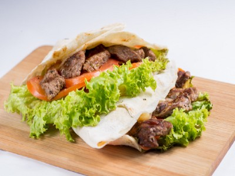

|  |
Food's name: Pita cake with grilled Chicken and Taziki sauce▸ Ingredients: |
||
*Ingredients for Pita:
|
*Ingredients for making grilled chicken:
|
*Ingredients for Tzatziki Sauce:
|
|
▸ Time to prepare: 2 hours
▸ Approx quantity: 5 pita cakes
▸ Detailed recipe:
Srep 1: Make dough:
- To make the yeast bloom faster, boil fresh milk without sugar to create warmth.
- Proceed to mix the bread ingredients in a large bowl (except milk).
- Add the warm milk to the bowl and continue mixing. Make sure to mix the dough well, knead it thoroughly until it's very smooth.
- Then, roll the dough into a ball, bring it to a warm place for the dough to rise.
Step 2: Create the Complete Pita:
- Wait for the dough to rise once, then take it out and roll it into small equal balls.
- Cover with PE film and incubate one more time.
- Sprinkle flour on a rolling pin to prevent sticking.
- After the dough has rested, use a rolling pin in the shape of an X to make the cake even and thin.
Step 3: Fried cake:
- Turn on the stove to low heat, put the non-stick pan on.
- When the pan is hot, add the flour to drain on one side, then flip the other side to drain.
- Bake until the cake is puffy and almost browned on both sides.
Step 4: Cooking grilled chicken:
- First, take the chicken and cut it into bite-sized pieces.
- Marinate the chicken with all the prepared ingredients.
- Then store in the refrigerator for at least 1 hour or preferably overnight.
- Skewer the chicken on a stick, for the best chicken you should grill on a charcoal stove.
- Put the chicken on the fire and turn red for 10-20 seconds, then remove it from the fire.
- After letting the chicken shrink to help keep the water inside for about 7-10 minutes, continue to bake until the chicken is cooked.
Step 5:
- Puree all the prepared ingredients put the sauce in a blender.
- Wait until it becomes a smooth, even mixture.
Step 6: Perfecting the dish:
- Put the grilled chicken in the inside of the cake.
- Add vegetables and seasonings of your choice.
- Add the Taziki sauce.
=>After completing the above steps, you can enjoy delicious Pita cakes.
▸ Calories and related information: